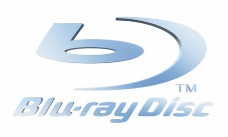
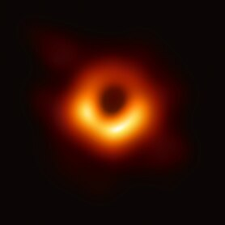

Últimas Noticias

Nuevo lanzamiento en Blu-Ray
La película Interestelar ya está disponible en edición especial Blu-Ray con escenas adicionales y un documental exclusivo.

Premios y Nominaciones
Interestelar ha sido nominada a los premios Oscar en la categoría de Mejor Dirección de Arte.

Científicos confirman teoría de la película
Astrofísicos han revelado nuevos estudios que confirman la precisión de los efectos visuales del agujero negro en Interestelar.
Hans Zimmer lanza edición especial del Soundtrack
El legendario compositor Hans Zimmer ha lanzado una versión extendida de la banda sonora de la película con pistas inéditas.